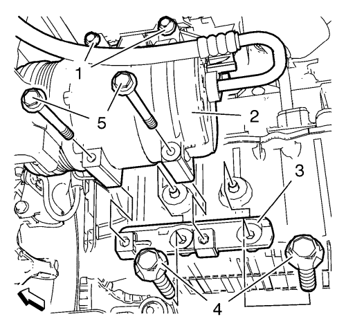
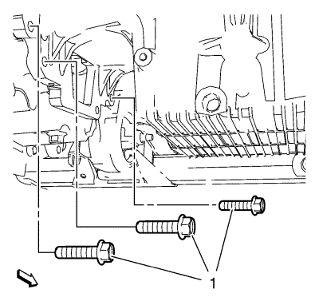
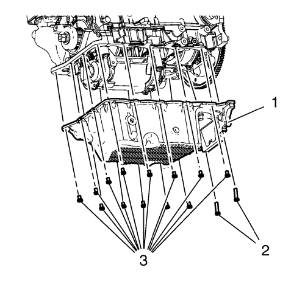
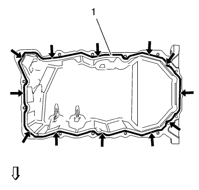

Sustitución del cárter de aceite cambio automático 6T45
Procedimiento de desmontaje
- Suba el vehículo a la altura máxima. Consultar Elevación y soporte en alto del vehículo .
- Desmonte el aislante del compartimento delantero. Consultar Sustitución del aislamiento del compartimento delantero .
- Desmonte el repuesto del bastidor de la suspensión delantera y del tren de rodaje. Consultar Sustitución del bastidor de la suspensión del tren anterior y del tren motriz
- Desmonte el generador y la correa del compresor del aire acondicionado y la bomba de la servodirección. Consultar Sustitución de la correa de la bomba de la dirección asistida y del compresor del aire acondicionado y el generador .

- Desmonte el tornillo (4) del tubo de aire de entrada del refrigerador de aire de carga.
- Retire las 2 abrazaderas para tubo flexible (3).
- Desmonte los 3 tornillos (1) del tubo de aire de entrada del refrigerador de aire de carga.
- Desmonte el tubo de aire de entrada del intercooler (2).

Nota: No extraiga los tornillos.
- Afloje los 2 tornillos superiores del compresor del aire acondicionado (1).
- Desmonte los 2 tornillos inferiores del compresor del aire acondicionado (5)
Nota: Tire con cuidado de no dañar el compresor del aire acondicionado.
- Tire del compresor del aire acondicionado suelto (2) hacia adelante.
- Quite los 2 tornillos (4) del soporte del compresor de aire acondicionado.
- Desmonte el soporte del compresor de aire acondicionado (3).

- Desmonte los 3 tornillos (1) del cárter de aceite al cambio.

Nota: Marque las posiciones de los tornillos del cárter de aceite, ya que tienen longitudes diferentes.
- Retire los 13 tornillos del cárter de aceite (3).
- Retire los 2 tornillos del cárter de aceite (2)
Nota:
| • | Utilice una herramienta adecuada. |
| • | Asegúrese de no dañar el cárter de aceite ni la superficie de sellado del cárter. Consultar Piezas separadoras . |
- Desmonte el cárter de aceite.
Procedimiento de montaje

Nota:
| • | Asegúrese de que la superficie de sellado del cárter de aceite no tiene aceite, grasa ni material de sellado viejo. |
| • | No cubra con sellador los orificios de los tornillos del cárter de aceite, ya que podría dañar sus roscas o el bloque del motor. |
- Cubra con sellador la superficie de sellado del cárter de aceite (1).
- Montar el cárter de aceite (1).
Precaución:Consulte Precaución con las fijaciones en la sección Prólogo.
- Monte los 2 tornillos (2) del cárter del aceite y apriételos a 11 N·m (98 lib. pulg.).
- Monte los 13 tornillos del cárter de aceite (3) y apriételos uniformemente en orden a 11 N·m (98 lib. pulg.).
- Monte los 3 tornillos del cárter de aceite al cambio (1) y apriételos a 50 N·m (37 lib. pie).
Nota: Tire con cuidado de no dañar el compresor del aire acondicionado.
- Tire del compresor del aire acondicionado suelto (2) hacia adelante.
- Monte el soporte del compresor de aire acondicionado (3).
- Monte los 2 tornillos del soporte del compresor del aire acondicionado (4) 22 N·m (17 lib. pie).
- Desmonte los 2 tornillos inferiores del compresor del aire acondicionado (5) 22 N·m (17 lib. pie).
- Apriete los 2 tornillos superiores del compresor del aire acondicionado (1) a 22 N·m (17 lib. pie).
- Monte el tornillo (2) del tubo de aire de entrada del refrigerador de aire de carga.
- Monte los 3 tornillos del tubo de aire de entrada del enfriador de aire de carga (1) y apriete a 10 N·m (89 lib. pulg.).
- Monte las 2 abrazaderas para tubo flexible (3).
- Monte el tornillo del tubo de aire de entrada del enfriador de aire de carga (4) y apriete a 10 N·m (89 lib. pulg.).
- Monte el generador y la correa del compresor del aire acondicionado y la bomba de la servodirección. Consultar Sustitución de la correa de la bomba de la dirección asistida y del compresor del aire acondicionado y el generador .
- Monte el repuesto del bastidor de la suspensión delantera y el tren de rodaje. Consultar Sustitución del bastidor de la suspensión del tren anterior y del tren motriz .
- Monte el aislante del compartimento delantero. Consultar Sustitución del aislamiento del compartimento delantero .
- Baje el vehículo en toda su altura.
| © Copyright Chevrolet. Reservados todos los derechos |